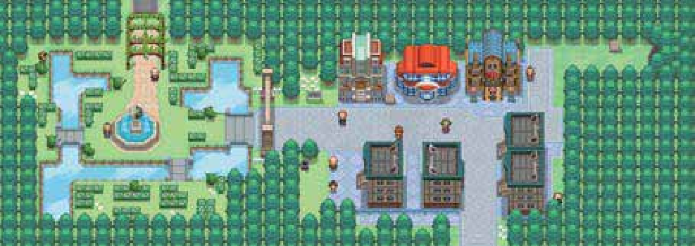
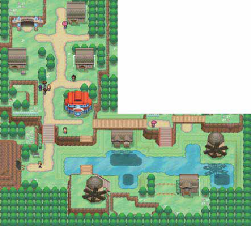
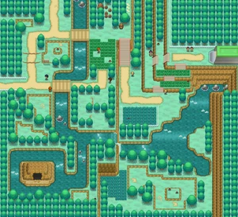
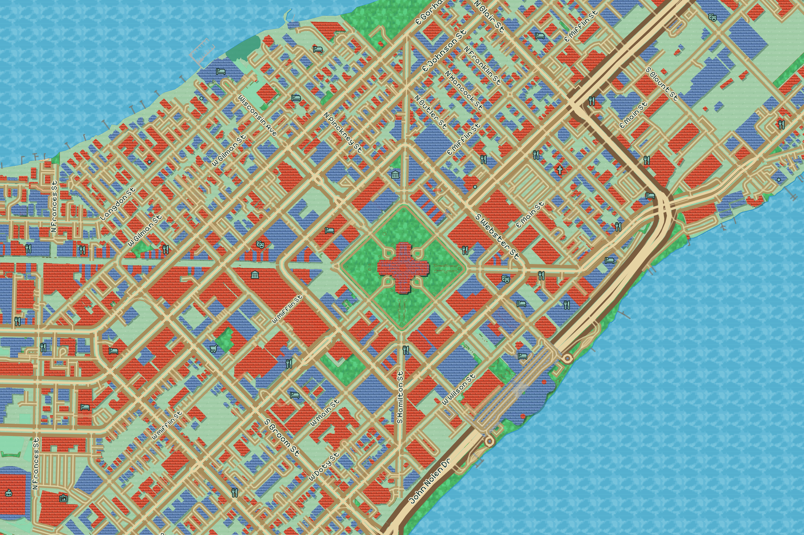
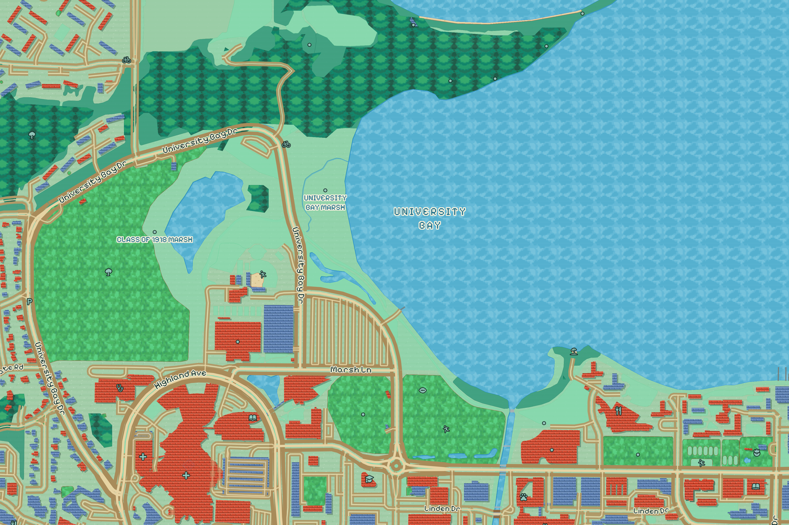
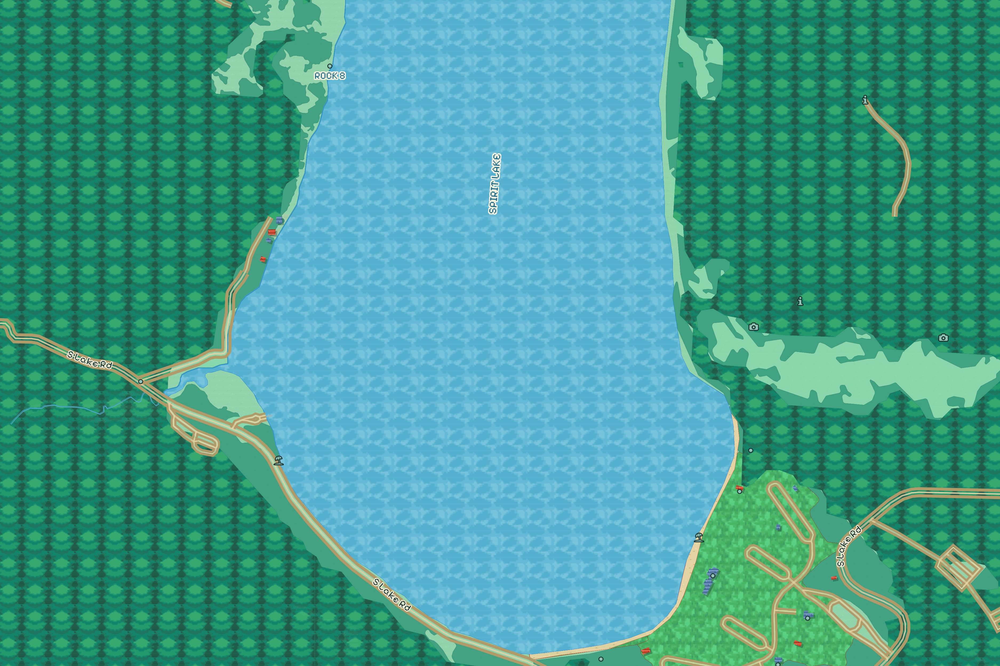
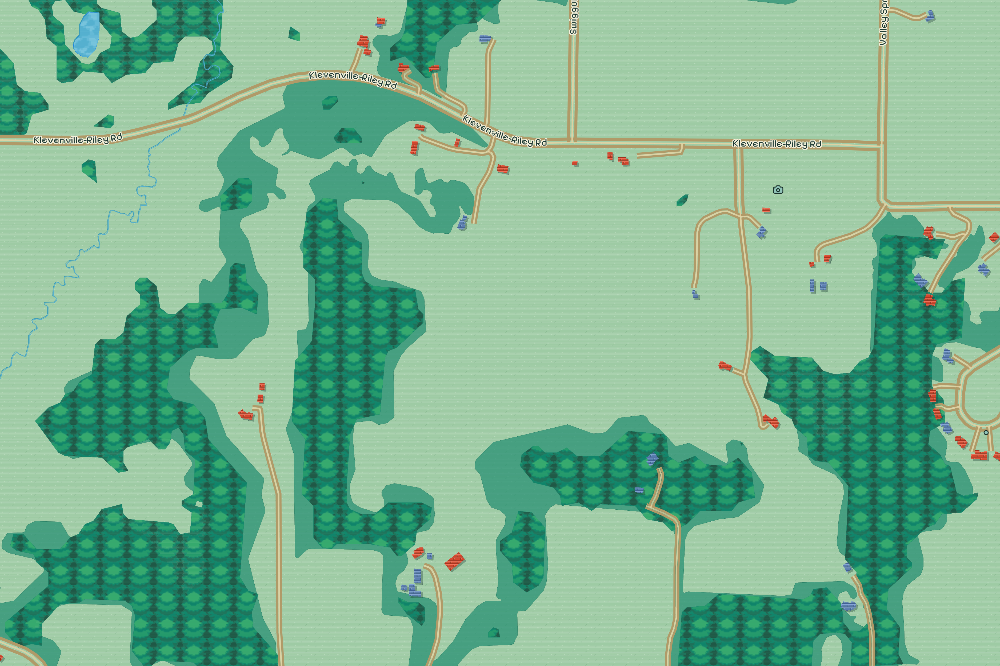

Route 572
A Pokémon Black 2 & White 2 Basemap
This map is a recreation of Pokemon Black 2 & White 2, my first and favorite Pokémon game I've ever played.
Inspiration



I took inspiration from these locations in the overworld for my basemap.
Four places at the same scale
Here are four places around Madison, Wisconsin, but at the same scale.




Capitol Square, Madison This is the heart of downtown Madison with lots of buildings everywhere.
University Bay, Lake Mendota This is the bay near the university with Picnic Point in frame as well.
Devil's Lake State Park This is Devil's Lake State Park, but here it is named Spirit Lake.
Farmland This is farmland that's near Mount Horeb.
This is the map at different scales.
Explore the Map Here
Credits:
Map created with Mapbox Studio
Data from OpenStreetMap
Style inspired by Pokémon Black 2 & White 2
Forest, water, and grass textures adapted from fan-made B/W tilesets (by भाग्य ज्योति and chimcharsfireworks).
Fonts: Press Start 2P and Pixelify Sans via Google Fonts.